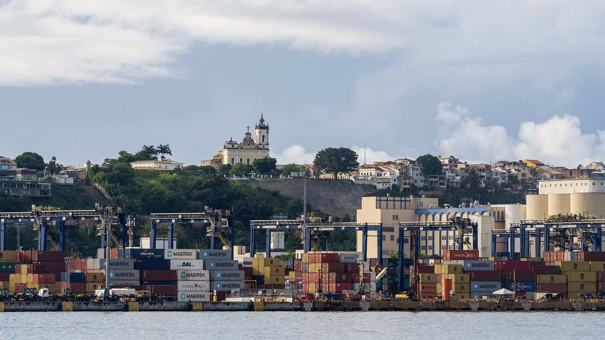

L
LOGISLOGÍSTICA Y SOSTENIBILIDAD
Edición nº 1
4º trimestre de 2026 · avance

Foto: Samory Pereira Santos · CC BY-SA 4.0
Dossier: corredores de escoamiento y control logístico
Chancay, el ferrocarril bioceánico y el desafío de las fronteras abiertas — por qué cada ruta nueva debe nacer con su gemelo de vigilancia.
Publicación trimestral · acceso abierto diamantelogis-magazine.vercel.app
Sumario
Edición nº 1 · 4º trimestre de 2026 · avance (portada y sumario)
Apertura
Abrir el corredor, vigilar la puertaEditorial · Miguel do Rosário
03
El pasaporte de la mercancíaReportaje especial · Miguel do Rosário
05
Secciones de la edición
Artículos científicosConvocatoria de trabajos en preparación — envíos en portugués, inglés o español.
Estudios de casoExperiencias reales de corredores, puertos y operadores.
Observatorio regulatorioEl trimestre en regulación logística y comercio exterior.
Revisiones de datosIndicadores de flujo, costo y sostenibilidad, explicados.
Este avance presenta la portada y el sumario de la edición nº 1. Las piezas de Apertura ya están publicadas en el portal y entran en la edición completa en PDF; las secciones científicas abren con la convocatoria de trabajos. Nada aquí es demostrativo — lo que ves es lo que existe.
Logis — Revista de Logística y Sostenibilidad · Instituto de Logística y Sostenibilidadlogis-magazine.vercel.app